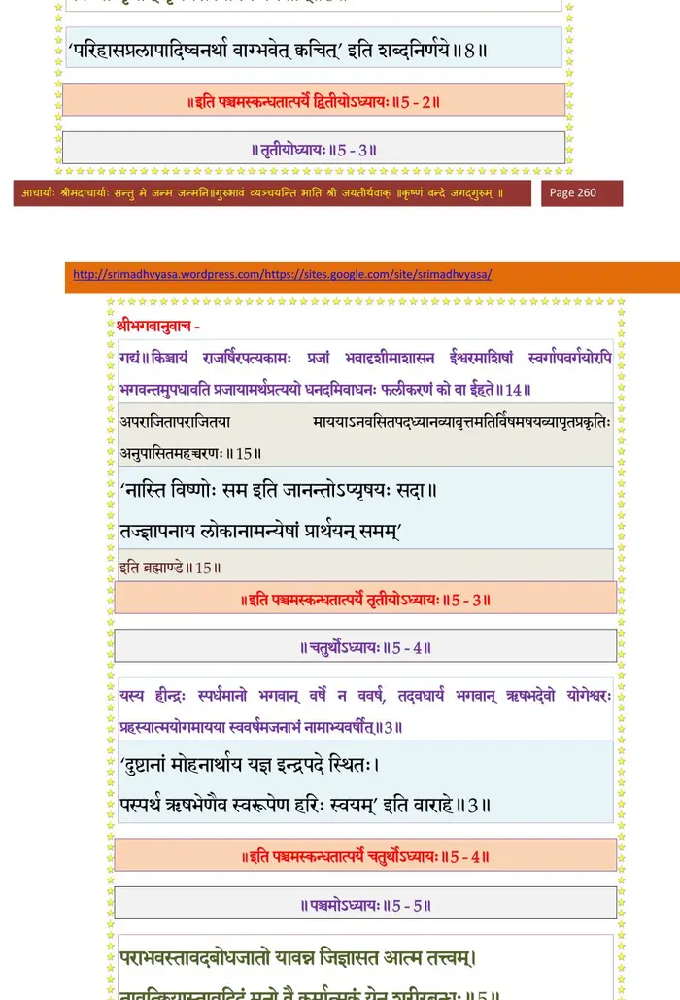

स्कन्ध 5 · अध्याय 2
श्लोक १
श्रीशुक उवाच–
एवं पितरि सन्निवृत्ते तदनुशासने वर्तमान आग्नीध्रो जम्बुद्वीपौकसः प्रजा औरसवद्धर्मानवेक्षमाणः पर्यगोपायत् ।। १ ।।
एवं पितरि सन्निवृत्ते तदनुशासने वर्तमान आग्नीध्रो जम्बुद्वीपौकसः प्रजा औरसवद्धर्मानवेक्षमाणः पर्यगोपायत् ।। १ ।।
श्लोक ३
स तु कदाचित्पितृलोककामः सुरवरवनिताक्रीडाचलद्रोण्यां भगवन्तं विश्वसृजां पतिमाहृतपरिचर्योपकरण आत्मैकाग्य्रेण तपसाऽऽराधयाम्बभूव ।।
एतदुपलभ्य भगवानादिपुरुषः सदसि गायन्तीं पूर्वचित्तिं नामाप्सरसमभि-यापयामास ।। ३ ।।
एतदुपलभ्य भगवानादिपुरुषः सदसि गायन्तीं पूर्वचित्तिं नामाप्सरसमभि-यापयामास ।। ३ ।।
श्लोक ५
सा च तदाश्रमोपवनमतिरमणीयविविधनिबिडविटपिविटपनिकटपुटलता-कुटिलरूढस्थलविहङ्गमिथुनैः प्लाव्यमानश्रुतिभिः प्रतिबोध्यमानसलिलकुक्कुट-कारण्डवकलहंसादिभिर्विचित्रमुपकूजितामलजलाशयकमलाकरमुपबभ्राम ।।
तस्याः सुललितपदविन्यासगतिविलासेनानुपदं खणखणायमानरुचिर-चरणाभरणस्वनमुपाकर्ण्य नरदेवकुमारः समाधियोगेनामीलितनयननलिन-मुकुलयुगलमीषद्विकास्याचष्ट ।। ५ ।।
तस्याः सुललितपदविन्यासगतिविलासेनानुपदं खणखणायमानरुचिर-चरणाभरणस्वनमुपाकर्ण्य नरदेवकुमारः समाधियोगेनामीलितनयननलिन-मुकुलयुगलमीषद्विकास्याचष्ट ।। ५ ।।
श्लोक ६
तामेवाविदूरे विलोक्य मधुकरीमिव सुमनस उपजिघ्रन्तीं दिविजमनुज-मनोनयनाह्लाददुघैर्गतिविहारविनयविलोकनसुस्वराक्षरावयवैर्मनसि नृणां कुसुमायुधस्य विदधतीं विवरम् ।। ६ ।।
श्लोक ७
निजमुखविगलितमदासवामोदमदान्धमधुकरनिकरोपरोधेन द्रुतपदविन्यास-वल्गुस्पन्दनस्तनकलशकबरहाररशनां देवीं तदवलोकनेन विधृतावसरस्य भगवतो मकरध्वजस्य वशमुपनीतो जडवदिति होवाच ।। ७ ।।
श्लोक ८
का त्वं चिकीर्षसि च किं मुनिवर्य शैले
मायाऽसि किं भगवतः परदेवतायाः ।
विज्ये बिभर्षि धनुषी सुहृदात्मनोऽर्थे
किं वा मृगान्मृगयसे विपिने प्रमत्तान्।। ८ ।।
मायाऽसि किं भगवतः परदेवतायाः ।
विज्ये बिभर्षि धनुषी सुहृदात्मनोऽर्थे
किं वा मृगान्मृगयसे विपिने प्रमत्तान्।। ८ ।।
भागवततात्पर्यनिर्णय

श्लोक ९
बाणाविमौ भगवतः शतपत्रपत्रौ
शान्तावपुङ्खरुचिरावतितिग्मदन्तौ ।
कस्मै प्रयुङ्क्षसि वने विचरन्न विद्मः
क्षेमाय नो जडधियां तव विक्रमोऽस्तु।। ९ ।।
शान्तावपुङ्खरुचिरावतितिग्मदन्तौ ।
कस्मै प्रयुङ्क्षसि वने विचरन्न विद्मः
क्षेमाय नो जडधियां तव विक्रमोऽस्तु।। ९ ।।
श्लोक १०
शिष्या इमे भगवतः परितः पठन्ति
गायन्ति साम सरहस्यमजस्रमीश ।
युष्मच्छिखाविलुलिताः सुमनोऽभिवृष्टीः
सर्वे भजन्त्यृषिगणा इव वेदशाखाः।। १० ।।
गायन्ति साम सरहस्यमजस्रमीश ।
युष्मच्छिखाविलुलिताः सुमनोऽभिवृष्टीः
सर्वे भजन्त्यृषिगणा इव वेदशाखाः।। १० ।।
श्लोक १३
वाचं परं चरणपङ्कजतित्तिरीणां ब्रह्मन्नरूपमुखरीं श्रृणुमोऽद्य तुभ्यम् ।
लब्धा कदम्बरुचिरङ्कविटङ्कबिम्बे यस्यामलातपरिधिः क्व च वल्कला ते ।।
किं सम्भृतं रुचिरयोर्द्विज शृृङ्गयोस्ते मध्ये कृशो वहसि यत्र दृशी श्रिते मे ।
पङ्कोरुणः सुरभिरात्मविषाण ईदृग्येनाश्रमं सुभग मे सुरभीकरोषि ।।
लोकं प्रदर्शय सुहृत्तम तावकं मे
यत्रत्य इत्थमुरसावयवावपूर्वौ ।
अस्मद्विधस्य मन उन्नयनौ बिभर्षि
बह्वद्भुतं सरसहाससुधां च वक्त्रे।। १३ ।।
लब्धा कदम्बरुचिरङ्कविटङ्कबिम्बे यस्यामलातपरिधिः क्व च वल्कला ते ।।
किं सम्भृतं रुचिरयोर्द्विज शृृङ्गयोस्ते मध्ये कृशो वहसि यत्र दृशी श्रिते मे ।
पङ्कोरुणः सुरभिरात्मविषाण ईदृग्येनाश्रमं सुभग मे सुरभीकरोषि ।।
लोकं प्रदर्शय सुहृत्तम तावकं मे
यत्रत्य इत्थमुरसावयवावपूर्वौ ।
अस्मद्विधस्य मन उन्नयनौ बिभर्षि
बह्वद्भुतं सरसहाससुधां च वक्त्रे।। १३ ।।
श्लोक १४
का वात्मवृत्तिरदनाद्बहिरङ्ग भाति
विष्णोः कलास्यनिमिषन्मकरौ च कर्णौ ।
उद्विग्नमीनयुगलं द्विजपङ्क्तिशोभि
चासन्नभृङ्गनिकरं सर उन्मुखं ते।। १४ ।।
विष्णोः कलास्यनिमिषन्मकरौ च कर्णौ ।
उद्विग्नमीनयुगलं द्विजपङ्क्तिशोभि
चासन्नभृङ्गनिकरं सर उन्मुखं ते।। १४ ।।
श्लोक १५
योऽसौ त्वया करसरोजहतःपतङ्गो
दिक्षु भ्रमन् भ्रमत एजयतेऽक्षिणी ते ।
युक्तं न ते स्म वरवक्रजटावरूथः
कृष्णोऽनिलो हरति लम्पट एष नीवीम्।। १५ ।।
दिक्षु भ्रमन् भ्रमत एजयतेऽक्षिणी ते ।
युक्तं न ते स्म वरवक्रजटावरूथः
कृष्णोऽनिलो हरति लम्पट एष नीवीम्।। १५ ।।
श्लोक १६
रूपं तपोधन तपश्चरतां तपोघ्नं
ह्येतत्तु केन तपसा भवतेह लब्धम् ।
चर्तुं तपोऽर्हसि मया सह मित्र मह्यं
किं वा प्रसीदसि स वै भवभावनो मे।। १६ ।।
ह्येतत्तु केन तपसा भवतेह लब्धम् ।
चर्तुं तपोऽर्हसि मया सह मित्र मह्यं
किं वा प्रसीदसि स वै भवभावनो मे।। १६ ।।
श्लोक १७
न त्वां त्यजामि दयितां द्विज दैवदत्तं
यस्मिन्मनो दृगपि वा न वियाति लग्नम् ।
मां चारुशृृङ्गार्हसि नेतुमनुव्रतं ते
चित्तं यतः प्रतिसरन्तु शिवाः सचिव्यः।। १७ ।।
यस्मिन्मनो दृगपि वा न वियाति लग्नम् ।
मां चारुशृृङ्गार्हसि नेतुमनुव्रतं ते
चित्तं यतः प्रतिसरन्तु शिवाः सचिव्यः।। १७ ।।
श्लोक १८
श्रीशुक उवाच–
इति ललनानुनयातिविशारदो ग्राम्यवैदग्ध्यया परिभाषया तां विबुध-वधूमिति सभाजयामास ।। १८ ।।
इति ललनानुनयातिविशारदो ग्राम्यवैदग्ध्यया परिभाषया तां विबुध-वधूमिति सभाजयामास ।। १८ ।।
श्लोक १९
सा च ततस्तस्य वीरयूथपतेर्बुद्धिशीलरूपविद्यावयःश्रियौदार्यैः पराक्षिप्त-मनास्तेन सहायुतायुतपरिवत्सरोपलक्षणं कालं जम्बुद्वीपपतिना भोगान् बुभुजे ।। १९ ।।
श्लोक २१
तस्यामु ह वा आत्मजान्स राजवर्य आग्नीध्रो नाभिकिम्पुरुषहरिवर्षे-लावृतरम्यकहिरण्मयकुरुभद्राश्वकेतुमालसञ्ज्ञान्नव भावयाम्बभूव सा सूत्वा तु पुत्रान्नवानुवत्सरं गृह एवापहाय पूर्वचित्तिर्भूय एवाजं देवमुपतस्थे ।।
आग्नीध्रसुतास्ते मातुरनुग्रहादौत्पत्तिकेनैव संहननबलोपेताः पित्रा विभक्तात्मतुल्यनामानि यथाभागं जम्बूद्वीपवर्षाणि बुभुजुः ।। २१ ।।
आग्नीध्रसुतास्ते मातुरनुग्रहादौत्पत्तिकेनैव संहननबलोपेताः पित्रा विभक्तात्मतुल्यनामानि यथाभागं जम्बूद्वीपवर्षाणि बुभुजुः ।। २१ ।।
श्लोक २२
आग्नीध्रो राजपुत्रस्तामप्सरसमेवानुदिनमभिमन्यमानस्तस्याः सलोकतां श्रुतिभिरवरुन्धन् ईजे यत्र पितरो मोदयन्ते ।। २२ ।।
श्लोक २३
सम्परेते पितरि नवभ्रातरो मेरुदुहितॄर्मेरुदेवीं प्रतिरूपामुग्रदंष्ट्रीं लतां रामां श्यामां नारीं भद्रां देवीमिति संज्ञा नवोदवहन् ।। २३ ।।
।। इति श्रीमद्भागवते पञ्चमस्कन्धे द्वितीयोऽध्यायः ।।